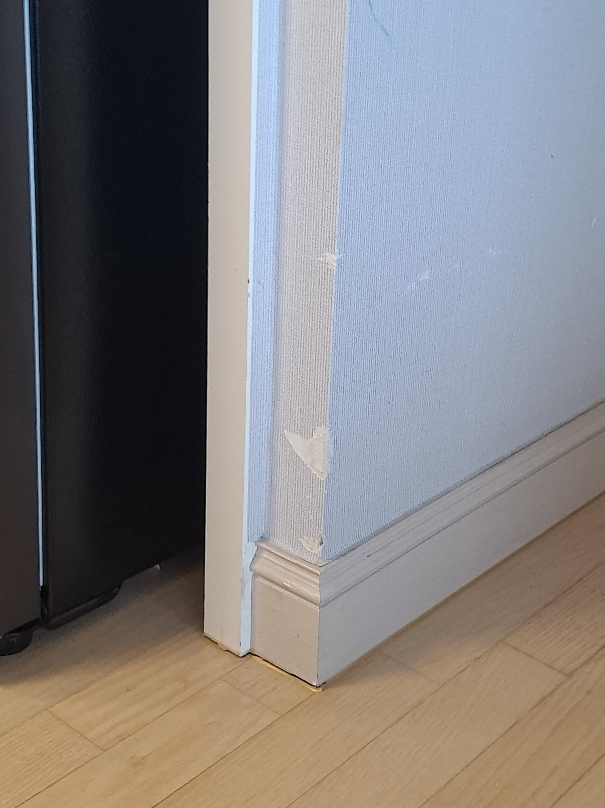
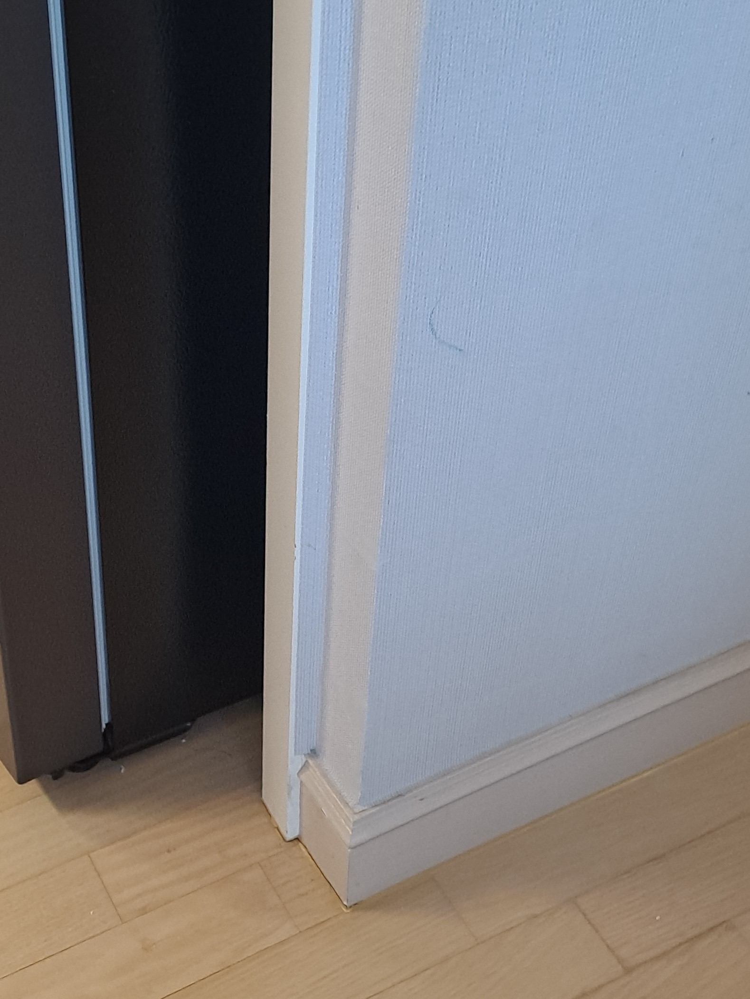

기존 벽지 유지
멀쩡한 주변 벽지를 유지하면서 손상된 부분을 보수합니다.
가구를 옮기다 벽에 쓸려 모서리의 벽지가 뜯어진 현장입니다. 같은 벽지를 구할 수 없어 도배를 하려면 이어진 벽면 전체를 시공해야 했습니다. 고객님은 공사 범위를 줄이고 기존 벽지를 유지하기 위해 벽지복원을 선택하셨습니다.

사진에서 모서리를 따라 벽지가 뜯긴 부분이 확인됩니다. 기존 벽지의 무늬와 주변 표면을 살펴 손상 부위가 자연스럽게 이어지도록 마무리하는 것이 중요한 현장입니다.
멀쩡한 주변 벽지를 유지하면서 손상된 부분을 보수합니다.
동일 제품이 없을 때도 손상 상태에 따라 부분복원을 검토할 수 있습니다.
이어진 벽면을 모두 도배하는 부담을 줄일 수 있습니다.
가구 이동으로 생긴 작은 찢어짐이나 모서리 손상을 상담합니다.
손상 범위와 남아 있는 벽지 상태에 따라 세부 작업 방법을 정합니다.
주변을 보호하고 찢어짐과 들뜸 범위를 살핍니다.
남아 있는 벽지를 살피고 약해진 가장자리를 정리합니다.
손상 상태에 맞춰 바탕과 모서리 형태를 정돈합니다.
주변 벽지의 색과 표면 무늬에 맞춰 복원합니다.
경계와 모서리의 연결 상태를 확인해 마무리합니다.
이어진 벽면을 전체 도배하지 않고 손상된 벽지를 부분복원했습니다. 이번 현장의 작업시간은 약 1시간 30분입니다.

“너무 신기해요~ 똑같은 벽지가 없어도 벽지보수가 되네요~ 못구멍도 보수가 된다니 진짜 기술력 짱이네요!”
| 비교 항목 | 부분복원 | 전체 도배 |
|---|---|---|
| 비용 | 국소 손상은 비교적 부담이 적음 | 연결된 벽면의 자재·시공 비용 발생 |
| 작업시간 | 손상 범위에 따라 비교적 짧음 | 벽지 제거와 도배 범위에 따라 길어짐 |
| 생활 불편 | 작업 범위가 작아 불편을 줄일 수 있음 | 가구 이동과 공간 확보가 필요할 수 있음 |
| 완성도 | 기존 벽지의 색과 무늬에 맞춰 보수 | 시공한 벽면을 새 벽지로 통일 |
| 효과 | 국소 찢어짐을 정리하며 기존 벽지 유지 | 넓은 손상이나 노후 벽면을 함께 개선 |